Обзор
CRYENGINE позволяет масштабировать, перемещать и закреплять окна любым удобным для вас способом. На этой странице мы объясним, как это сделать.
Инструменты масштабирования и перемещения
Масштабирование и перемещение инструментов работает так же, как в Windows.
Чтобы масштабировать окно, переместите указатель мыши к краю окна, чтобы он превратился в стрелку с концом double. Нажмите и удерживайте левую кнопку мыши и переместите курсор мыши.
Чтобы переместить окно, щелкните и перетащите его заголовок в нужное положение.
Стыковочные окна
Помощники по закреплению будут автоматически появляться всякий раз, когда окно перетаскивается на другое окно или на сам редактор Sandbox.
Окно можно прикрепить к различным местам: по бокам, сверху и снизу всего экрана, по бокам, сверху и снизу в другом окне и в виде вкладки в другом окне. Все это подробно описано ниже.
Чтобы объяснить, как это работает, Flow Graph используется window, но, конечно, это применимо к любому окну.
Закрепление на весь экран
Чтобы закрепить выбранное окно сбоку, сверху или снизу всего экрана, выберите строку заголовка окна, которое необходимо переместить, и перетащите ее. В центре и по краям экрана появится помощник по стыковке. Перетащите строку заголовка окна на одного из внешних помощников:
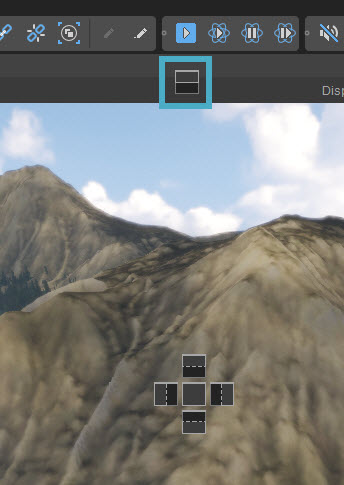
Появится синий предварительный просмотр того, где на экране окажется окно:
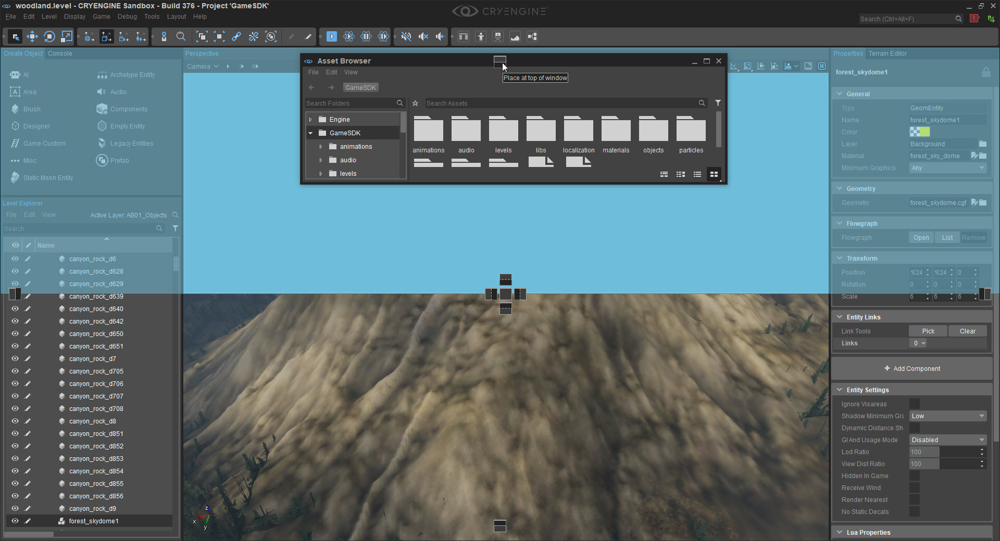
Отпустите, как только этот предварительный просмотр станет видимым, и окно будет закреплено в указанном месте:
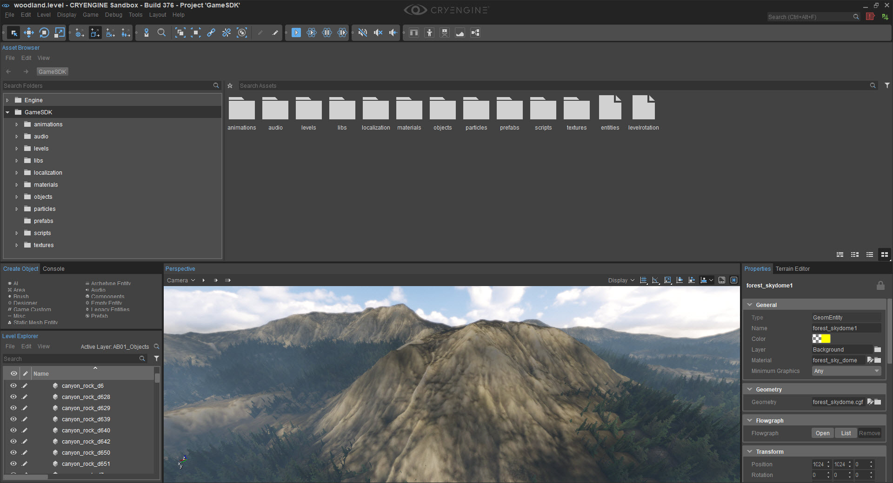
Закрепление в другом окне
Чтобы закрепить выбранное окно сбоку, сверху или снизу другого окна, перетащите окно за строку заголовка и переместите его в окно, к которому оно должно быть прикреплено. Помощники по стыковке появятся в середине этого окна, а не в середине всего экрана. Теперь перетащите строку заголовка выбранного окна на внутренние помощники стыковки:
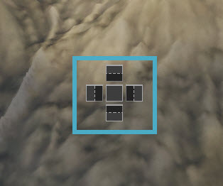
И снова появится синий предварительный просмотр того, где в конечном итоге окажется окно:
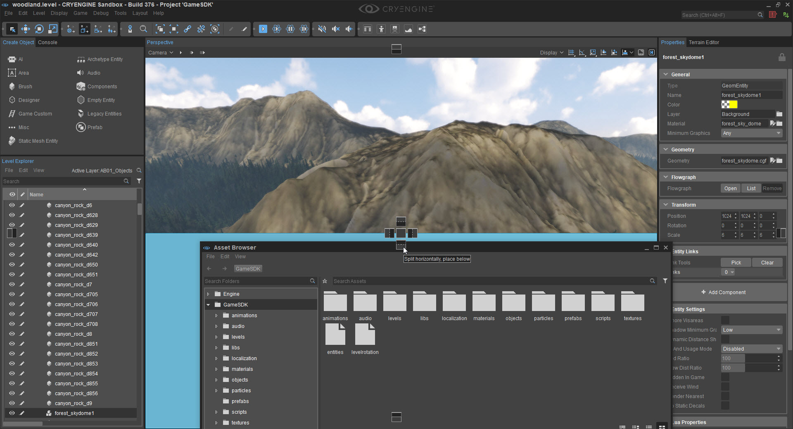
Отпустите кнопку мыши, и окно закрепится.
Это также можно сделать в других окнах рядом с видовым экраном:
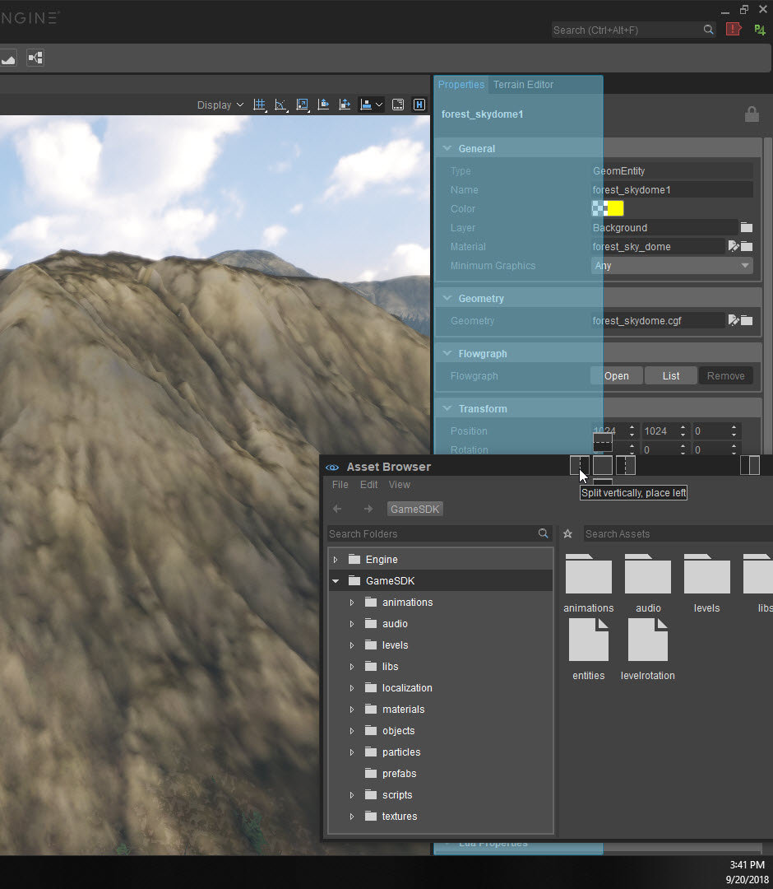
Закрепление окна как вкладки
Это отличная экономия места, особенно если используется только один монитор.
Есть два способа закрепить окно в виде вкладки.
Использование помощника по стыковке
Перетащите строку заголовка окна, которое необходимо закрепить, на центральный помощник по закреплению:
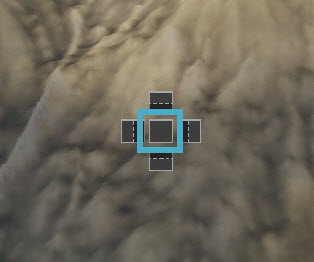
Все окно, к которому оно будет прикреплено как вкладка, станет синим:
Теперь отпустите и в окне появится еще одна вкладка:
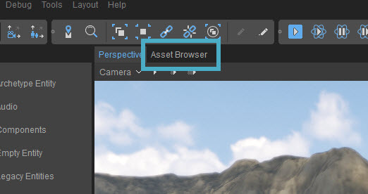
Теперь в этом разделе можно переключаться между окнами, нажимая на соответствующую вкладку.
Перемещение внутри области вкладок
Строку заголовка выбранного окна также можно перетащить в область вкладок целевого окна. Затем он будет помещен справа от вкладки, которая станет синей:
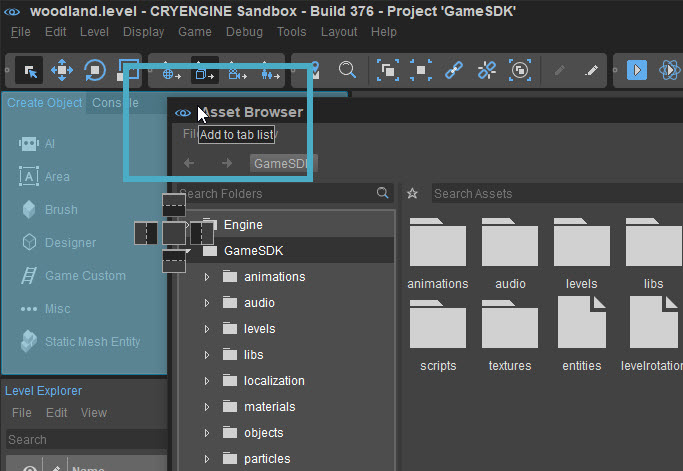
Изменение порядка вкладок
Порядок вкладок в окне можно изменить, перетащив вкладку:
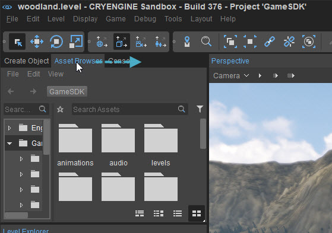
Отстыковка Windows
Чтобы переместить окно из закрепленного положения в другое место, просто перетащите вкладку окна, и оно открепится и будет вести себя как обычное плавающее окно.
Открепление более чем одной вкладки
Также можно открепить (и повторно закрепить) несколько вкладок одновременно. Для этого щелкните и перетащите пустое место рядом с вкладками на панели:
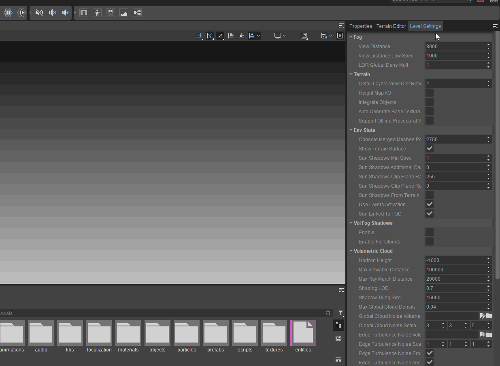
Закрытие вкладок
Вкладки не имеют крестика в правом верхнем углу для их закрытия, как вы могли ожидать. Вместо этого им требуется щелчок правой кнопкой мыши, чтобы отобразить возможность их закрытия:
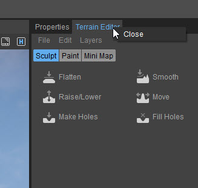
Больше вкладок, чем умещается на экране
Если на панели вкладок больше, чем умещается на экране, появится раскрывающееся меню для быстрого доступа ко всем вкладкам:
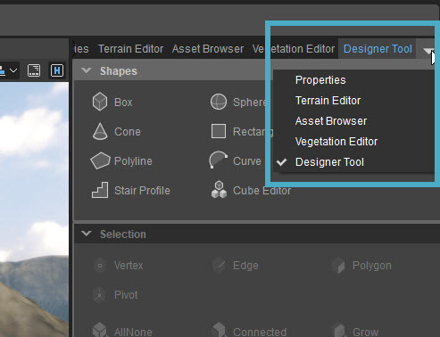
Сброс макета Sandbox
Если макет Sandbox необходимо сбросить до настроек по умолчанию, выберите Макет -> Сбросить макет. Это отменит все изменения, внесенные в макет, и отобразятся только панели инструментов, которые отображаются по умолчанию.
Макеты проектов
Работая в команде разработчиков и используя систему контроля версий, можно очень легко делиться собственными макетами с другими.
Сделайте это, скопировав файл *.json из вашего местный папка проекта (по умолчанию C:\Users\<User_Name>\AppData\Roaming\Crytek\CRYENGINE\Layouts) к Engine\Layouts папка в папке с игрой. Последнюю папку, возможно, придется создать, поскольку по умолчанию она не существует.
Теперь пользовательский макет можно зарегистрировать в системе управления версиями вместе с остальными данными проекта, чтобы они отображались и для остальной части команды рядом с любыми макетами, которые они создали для себя.
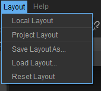